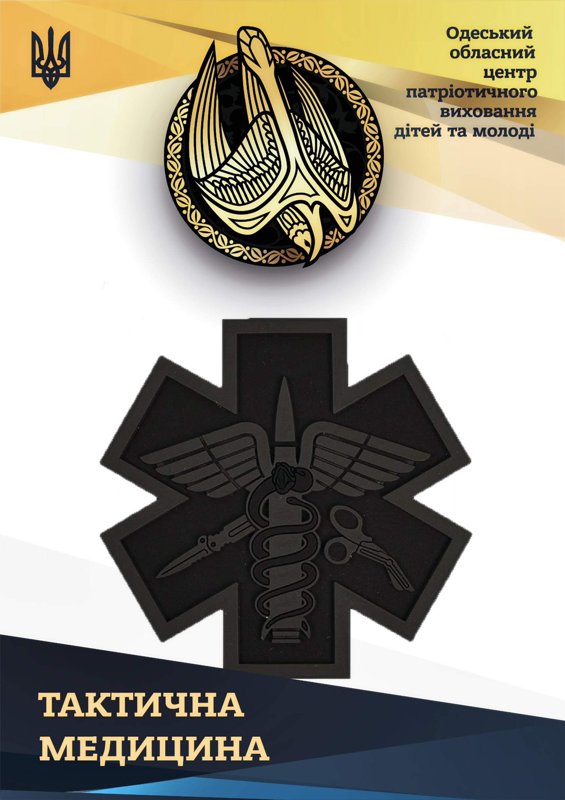

Гасло тактичної медицини – правильні дії в правильний час! В умовах реальної військової агресії та захоплення території України Російською Федерацією проблема захисту Батьківщини стала, як ніколи актуальною. Вчасне надання першої і долікарської медичної допомоги зберігає життя поранених та хворих, а своєчасна евакуація з поля бою запобігає повторному ураженню або загибелі. Тому, використовуючи досвід країн НАТО, було впроваджено курс тактичної медицини. Тактична медицина - це надання медичної допомоги під час військових дій. Впровадження цього курсу для кожного бійця в західних арміях призвело до гарних результатів - кількість загиблих від поранень в армії США зараз є найнижчою за всю історію. Тактична медицина враховує той факт, що місце і обставини в яких надається допомога під час бойових дій, принципово відмінні від звичних лікарень, салону карети швидкої допомоги або, навіть, тротуару серед міста. Ранній початок лікарської допомоги є фактором, який значно покращує шанси на виживання та відновлення функцій у пораненого. Тому існує поняття «золотої години» - перша година після поранення, протягом якої повинно розпочатись надання кваліфікованої лікарської допомоги. Кожний боєць будь-якої сучасної армії, крім майстерного володіння озброєнням, фізичної та тактичної підготовки, досконало володіє прийомами надання медичної допомоги в бойових умовах. Боєць, який не володіє знаннями з тактичної медицини є небезпечним сам для себе та своїх товаришів. Розділ тактичної медицини розрахований на навчання базових навичок для надання само- та взаємодопомоги в умовах бойових дій. Матеріали розділу будуть корисні при підготовці учнів у наданні першої домедичної та медичної допомоги в зонах обстрілу і укриття.
